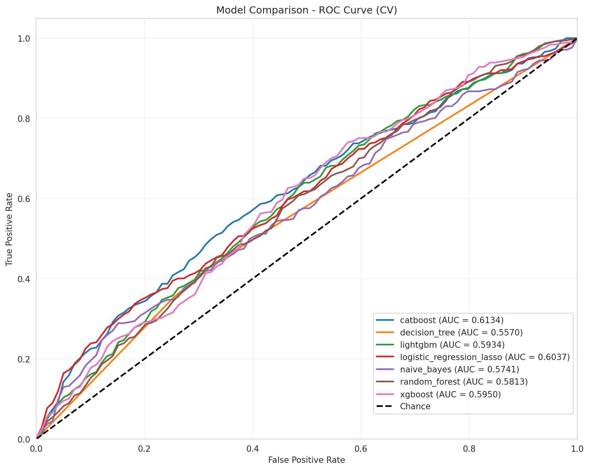
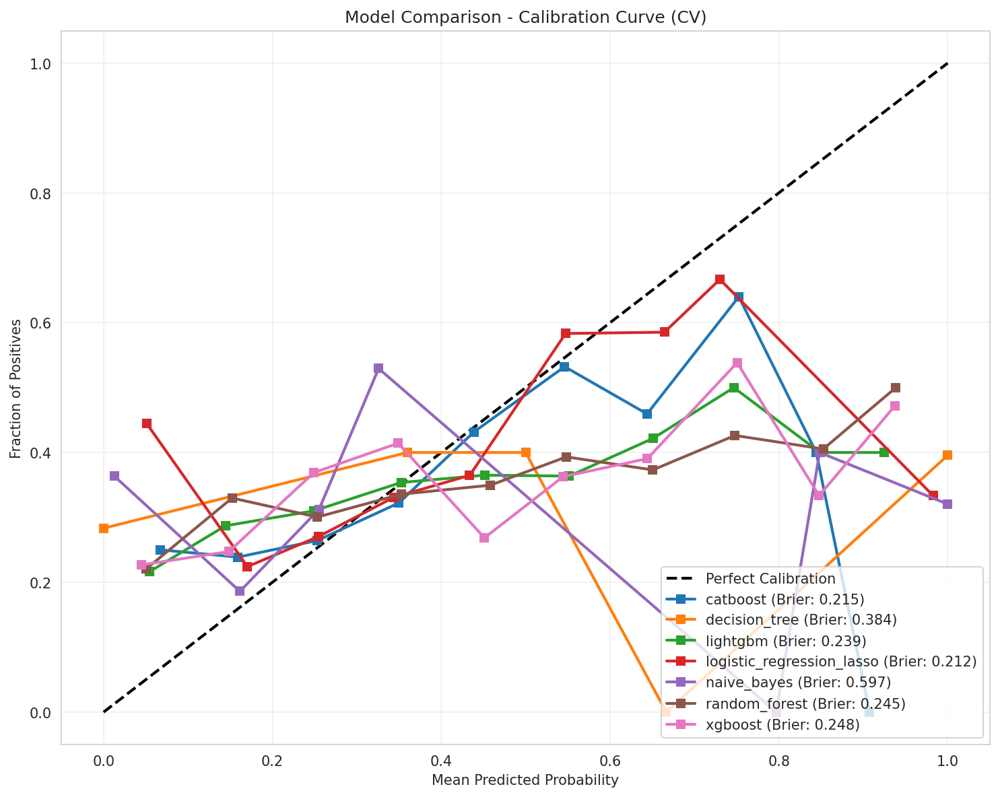

Fase · Fase 3
EXPERIMENTO 3 - FEATURES CATEGÓRICAS
Objetivo: evaluar impacto de binnning en variables continuas (EDAD_CAT, HB_CAT)
| Modelo | AUC ROC | Brier Score | Δ vs Exp2 | Posicion |
|---|---|---|---|---|
| catboost | 0.6134 | 0.2148 | -0.0058 | 1 |
| logistic_regression_lasso | 0.6037 | 0.2125 | -0.0018 | 2 |
| xgboost | 0.5950 | 0.2476 | -0.0095 | 3 |
| lightgbm | 0.5934 | 0.2392 | -0.0061 | 4 |
| random_forest | 0.5845 | 0.2452 | -0.0023 | 5 |
| naive_bayes | 0.5741 | 0.5972 | +0.0084 | 6 |
| decision_tree | 0.5575 | 0.3836 | +0.0007 | 7 |
ROC comparativa (Exp 3)

Calibracion comparativa (Exp 3)

Feature importance - catboost

SHAP Summary - catboost

Lectura
CatBoost baja ligeramente a 0.6134 (-0.58% vs Exp2). Variables categorizadas aportan modesto: EDAD_CAT (4.95%), HB_CAT (5.17%). EDAD continua (36.92%) y HB_PREQX (24.89%) siguen dominando. Binning no mejora performance, modelos tipo CatBoost ya manejan bien continuas. Mejor mantener variables continuas.
Graficas actualizadas desde exp_03_categorical_features - modelo catboost - plot_metadata.json
3